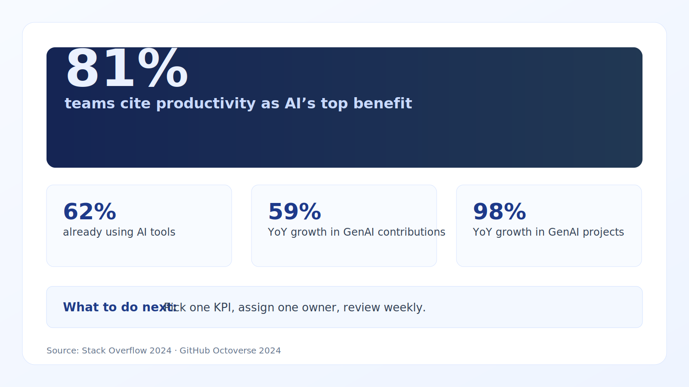

The best first AI projects reduce repetitive manual steps tied directly to revenue, cost, or cycle time.
AI ROI indicators teams can trust
Updated with current benchmarks and practical implementation guidance for 10–100 person teams.
What is working now
- AI use in software delivery has moved from experimentation to default workflow for many teams.
- Focus is shifting from “tool adoption” to measurable throughput, quality, and cycle-time outcomes.
- Teams are standardising guardrails (review, testing, prompt patterns) to reduce rework from AI output.
Evidence and benchmarks
- 76% of developers are using or planning to use AI tools (Stack Overflow, 2024). Source
- 62% already use AI tools in their workflow (Stack Overflow, 2024). Source
- 81% cite productivity as the top AI benefit (Stack Overflow, 2024). Source
- 59% YoY increase in contributions to GenAI projects on GitHub (Octoverse, 2024). Source
- 98% YoY increase in GenAI project count on GitHub (Octoverse, 2024). Source
Execution playbook (next 30 days)
- Pick one value stream (e.g., quote turnaround or incident triage) and baseline it before AI changes.
- Define human-in-the-loop controls for quality-critical outputs.
- Review ROI weekly using time saved, error rate, and throughput impact.

Citations
High-ROI pattern
Quote generation, reconciliation, routing, and exception handling.
Avoid
Broad AI experiments without baseline metrics or accountable owners.
Measure
Time saved, error reduction, throughput gains, and revenue velocity impact.